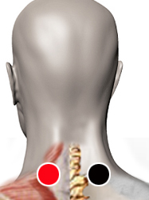

Desbloqueo energético
Par
nudo braquial - nudo braquial

Nota: A la altura de la 7ma. cervical. Algunos biomagnetistas aconsejan aplicar dos magnetos (+ y -) en cada costado.
Generalidades:
Astenia*, adinamia*, desoncentración. Rastreo dirigido con el imán e impactación profiláctica en - biomagnetistas.
El par se puede utilizar cuando el cuerpo del consultante da una respuesta pobre al magneto o a las preguntas a nivel bioenergético. Esto puede deberse a mala conducción de la electricidad. El par también se lo puede aplicar el terapeuta en forma profiláctica. Muchos biomagnetistas recomiendan ingerir un vaso de agua con un poco de sal antes del rastreo (tanto el consultante como el terapeuta) esto mejora la respuesta muscular inteligente. Es aconsejable no realizar el rastreo bioenergético con estado de cansancio, agotamiento, angustia, preocupación o cualquier otra alteración psíquica.
*Debilidad, agotamiento, falta de fuerza muscular, falta de motivación y empuje.